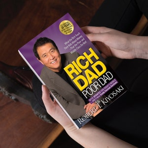

Library › Money & Finance
Rich Dad Poor Dad — Summary & Key Lessons

What the rich teach their kids about money that the poor and middle class do not.
📖 OPEN THE FULL INTERACTIVE BREAKDOWN →🌐 Read it in Hindi, Hinglish, Gujarati, Tamil & 22 more languages — free, with audio.
💡 The Big Idea
Kiyosaki grew up with two father figures: his educated but broke 'Poor Dad' (his real father) and his best friend's father, 'Rich Dad,' an eighth-grade dropout who became one of Hawaii's richest men. The book contrasts their mindsets to reveal one core truth: schools teach you to work for money, but never how money works. Buy assets that put money in your pocket, avoid liabilities that take it out, and escape the rat race.
🧠 The 8 Key Lessons
Lesson 1: The Rich Don't Work for Money
Lesson 1
The poor and middle class work for money; the rich make money work for them. Most people's lives are controlled by two emotions — fear (of being broke) and desire (for stuff) — which trap them in the 'Rat Race': wake, work, pay bills, repeat. A raise just raises the bills. The escape isn't a higher salary; it's learning to see opportunities and build income sources that don't require your time.
📖 Example: At age 9, Kiyosaki worked for Rich Dad for 10 cents an hour and got angry about the low pay. Rich Dad's lesson: that anger is exactly what keeps people trapped — they either work for pennies quietly or chase raises forever. Then the boys spotted discarded… Read the full example →
⚡ Do this: List every rupee/dollar you earned last month. What % required your direct time? Start building one income stream that doesn't.
Lesson 2: Know the Difference: Assets vs. Liabilities
Lesson 2: Why Teach Financial Literacy?
Rule #1 — the only rule, per Rich Dad: know the difference between an asset and a liability, and buy assets. An asset puts money IN your pocket (stocks, bonds, rental income, royalties, businesses that run without you). A liability takes money OUT (car loans, credit card debt, and — controversially — the house you live in). The rich buy assets; the middle class buy liabilities they believe are assets.
📖 Example: Your own home: mortgage payments, taxes, maintenance, insurance flow OUT every month. It's a liability by cash-flow logic. A rental flat that clears ₹15,000/month after all costs? Asset. Same building — the direction of cash flow decides. Read the full example →
⚡ Do this: Draw two columns: what puts money in your pocket monthly vs. what takes it out. Your goal: make the asset column's income exceed your expenses.
Lesson 3: Mind Your Own Business
Lesson 3
There's a difference between your profession and your business. Your profession pays the bills; your business is your asset column. Most people spend their lives minding someone else's business — making their employer rich — while their own asset column stays empty. Keep your day job, but start buying real assets with your earnings, not more toys or higher-status liabilities.
📖 Example: Ray Kroc of McDonald's asked a room of MBA students what business he was in. 'Hamburgers,' they laughed. 'No — my business is real estate.' McDonald's owns some of the most valuable street corners on earth; the burgers are what pays for the land. Read the full example →
⚡ Do this: Keep your job title, but from today ask: what is MY business? Route a fixed % of every paycheck into your asset column — before any spending.
Lesson 4: Taxes and the Power of Corporations
Lesson 4: The History of Taxes
Taxes were originally aimed at the rich — then landed permanently on the middle class, who have taxes taken before they're even paid. The rich legally play a different game using corporate structures: a corporation earns, spends on expenses, and is taxed on what's left. Employees earn, get taxed, and live on what's left. Financial IQ = accounting + investing + markets + law. The law rewards those who understand it.
📖 Example: Employee: earn ₹100 → pay ~₹30 tax → spend ₹70. Business owner: earn ₹100 → deduct legitimate expenses (travel, equipment, education) → pay tax only on the remainder. Same income, radically different outcomes — all legal. Read the full example →
⚡ Do this: Learn the basics of your country's tax code for businesses and investors. One consult with a good CA/accountant about legal structures can pay for itself many times over.
Lesson 5: The Rich Invent Money
Lesson 5
Inside each of us is a bold, financially intelligent self — usually paralyzed by self-doubt and the fear of losing. Financial genius requires both knowledge and courage. Great opportunities aren't seen with the eyes but with the mind. Markets always create windows — recessions, panics, mispriced deals — and the trained mind assembles options: raise capital, structure deals, move fast, while everyone else says 'you can't do that here.'
📖 Example: In a 1990s market crash, Kiyosaki bought a $75,000 house for $20,000 at a foreclosure sale using borrowed short-term money, then sold it for $60,000 with minimal effort — roughly $40,000 created not by saving harder, but by knowing what to do when others… Read the full example →
⚡ Do this: Invest in your financial education before your investments: one investing book a month, track one market, and analyze (on paper) one deal a week until patterns appear.
Lesson 6: Work to Learn, Not to Earn
Lesson 6
Job security is the poor dad's mantra; skill acquisition is the rich dad's. Take jobs for the skills they teach — sales, marketing, communication, leadership, systems — rather than the salary they pay. Specialization makes you dependent; broad competence makes you dangerous. The most important skill of all: sales and marketing. Talented people are often broke because they can sell nothing, including themselves.
📖 Example: Kiyosaki — a Marine pilot with a shipping career available — instead joined Xerox to conquer his fear of rejection and learn to sell. That 'lower-status' skill became the foundation of every business he built. Best-selling author, he notes, means best… Read the full example →
⚡ Do this: Name the one skill you avoid because it scares you (usually selling or public speaking). Take a role, project, or course that forces you to practice it this quarter.
Lesson 7: Overcome the 5 Obstacles
Chapter 8: Overcoming Obstacles
Financially literate people still fail to build wealth because of five demons: Fear (of losing money — winners let losses make them, not break them), Cynicism ('the sky is falling' — doubt paralyzes), Laziness (busy people are often the laziest — too 'busy' to mind their wealth), Bad Habits (paying yourself last), and Arrogance (what you don't know loses you money). Texans' motto applies: if you're going to lose, lose big and turn the loss into a story — failure inspires winners and defeats losers.
📖 Example: Colonel Sanders lost everything at 65 with just a Social Security check and a fried chicken recipe. Rejected 1,009 times before someone said yes — KFC exists because he'd learned to treat losses as fuel, not verdicts. Read the full example →
⚡ Do this: Adopt 'pay yourself first': automate a transfer to investments the morning your salary lands. Let the pressure of remaining bills make you resourceful.
Lesson 8: Getting Started: The 10 Steps
Chapters 9–10: Getting Started & Still Want More?
Wealth-building is a process you start today: find a reason bigger than laziness (deep emotional 'wants'), pay yourself first, choose friends who talk opportunities rather than gossip, master one investing formula then learn new ones, ask 'how can I afford it?' instead of saying 'I can't afford it', have heroes to model, and teach others — because giving knowledge multiplies it. Action always beats inaction; the smart work is in the doing.
📖 Example: Kiyosaki's exercise: stop saying 'I can't afford it' (a mental surrender that shuts the brain off) and ask 'HOW can I afford it?' — a question that forces the brain to generate options. One phrase closes the mind; the other opens it. Read the full example →
⚡ Do this: Write your big WHY (the future you want + the past you refuse to repeat). Pin it where you'll see it daily — it's the fuel for every other step.
✅ 5-Step Action Plan
- Build your personal cash-flow chart: income, expenses, assets, liabilities.
- Automate 'pay yourself first' — fixed % to assets on payday.
- Buy your first true asset, however small (index fund SIP counts).
- Replace 'I can't afford it' with 'How can I afford it?' for 30 days.
- Read one money book per month — knowledge is the real leverage.
⚠️ When This Doesn't Work
The asset-versus-liability frame is powerful but dangerously simplified. Real estate in India can be an illiquid 'asset' that eats cash for years, and the book's cheerleading for leverage has sent many small investors into debt. If your cash flow is thin, 'buy assets' can become 'buy more EMIs.' Run the numbers with your actual rent, vacancy and interest before calling anything an asset.
💀 The Graveyard Proves It
🧸 Toys "R" Us — Outsourced Its Future to Amazon, Then Drowned in Debt. Burn: 800 stores, 33,000 jobs. Read the full case study →
💬 Best Quotes from Rich Dad Poor Dad
- “The rich buy assets. The poor only have expenses. The middle class buy liabilities they think are assets.”
- “It's not how much money you make. It's how much money you keep.”
- “The single most powerful asset we all have is our mind.”
Interactive version: mark lessons as read, listen in your language, share quote cards.